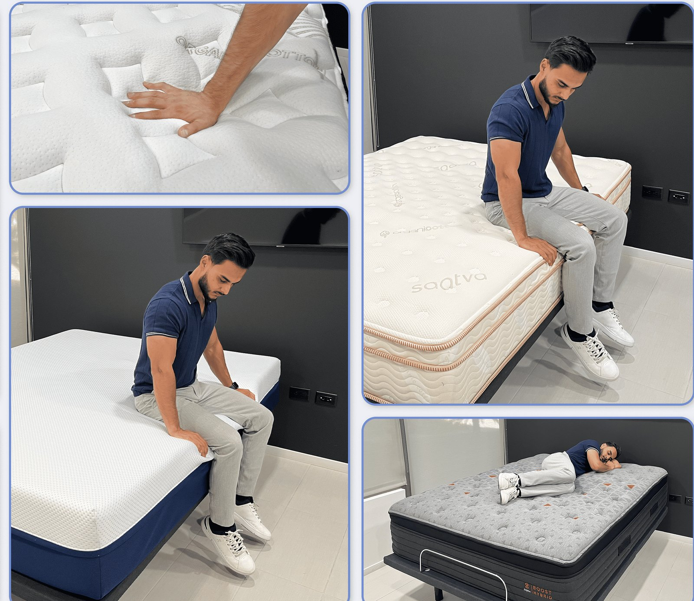

/how-we-test-mattresses/. Final launch still requires WordPress publish, schema render, media upload, redirects, and live QA.
How We Test Mattresses
By Firdous “Ferdie” Farhad | Lead tester: Firdous “Ferdie” Farhad | Updated June 19, 2026
Ferdie authors Simply Rest Lab mattress content from a first-hand, hands-on testing perspective, using pressure relief, spinal alignment, motion isolation, cooling, edge support, response, setup, and comfort observations to support each recommendation.
Simply Rest Lab uses repeatable hands-on tests to evaluate how mattresses perform in the areas shoppers care about most: pressure relief, spinal alignment, motion isolation, cooling, edge support, response, setup, and long-term comfort.
Our testing process is designed to be practical and visible. When possible, we use photos and video clips so readers can see how each mattress responds instead of relying only on written claims.

Testing Disclosure and Limits
Affiliate disclosure: Simply Rest may earn a commission when readers buy through some links. Testing notes, scorecards, and recommendations should still be tied to the Simply Rest Lab methodology, product evidence, and clearly labeled commercial relationships.
Our tests are designed to compare mattress performance, not to provide medical advice. Mattress comfort can affect how supported someone feels, but we do not diagnose, treat, cure, or guarantee relief for pain, sleep disorders, or medical conditions.
Pressure Relief Test
Pressure relief testing looks at how well a mattress cushions high-pressure areas like the shoulders, hips, and lower back. Our tester lies on the mattress in common sleeping positions and documents how the surface conforms, compresses, and rebounds.
- Side, back, and stomach position checks
- Hand impression or surface response photos
- Close-ups around shoulder and hip zones
- Notes on contouring, sink, and discomfort
Spinal Alignment Test
Spinal alignment testing checks whether the mattress supports a neutral body position. Our tester uses side-profile framing and, when helpful, a straight edge or yardstick to visually assess alignment.
- Side sleeping alignment
- Back sleeping lumbar support
- Stomach sleeping hip support
- Visible sagging, lifting, or pressure notes
Motion Isolation Test
Motion isolation testing shows how much movement travels across the mattress. A glass of water may be placed on one side while the tester rolls, shifts, or gets up on the other side.
This test is especially useful for couples and light sleepers because it shows whether one sleeper’s movement is likely to disturb another.
Temperature Regulation Test
Temperature testing looks at how warm or cool the mattress feels during use. We may record the mattress surface temperature before and after lying on it, then combine that with material notes, cover feel, and subjective heat buildup observations.
Edge Support Test
Edge support testing evaluates the stability of the mattress perimeter. Our tester sits and lies near the edge to check compression, support, and whether the surface feels secure.
Response Time Test
Response time testing shows how quickly the mattress recovers after pressure is applied. This helps shoppers understand whether the mattress feels slow and contouring or more responsive and easy to move on.
Noise Test
Noise testing is done in a quiet environment while the tester rolls, shifts positions, and sits up. We listen for squeaks, creaks, cover rustling, or other movement sounds that could disturb sleep.
Setup and Usability Test
Setup testing documents the unboxing or showroom experience, including handling, packaging, expansion, off-gassing, handles, and any usability friction shoppers should know about.
Long-Term Comfort Notes
When possible, we add long-term comfort notes based on repeated use, sleep logs, or follow-up testing. These updates help show whether early impressions hold up over time.
How Scores Are Calculated
Our final Lab Score is weighted to reflect real-world buying importance. Support and sleep fit carry the most weight, followed by value, edge support, motion transfer, cooling, response time, and trial period.
| Category | Weight |
|---|---|
| Support / Sleep Fit | 25% |
| Value | 15% |
| Edge Support | 15% |
| Motion Transfer | 15% |
| Cooling & Breathability | 10% |
| Response Time | 10% |
| Trial Period | 10% |
Important: Mattress comfort is personal. Our scores are designed to help shoppers compare performance, but the best mattress for you still depends on your body type, sleep position, comfort preferences, and budget.
Ferdie’s First-Hand Testing Notes
Ferdie’s first-hand testing summary connects this page to the Simply Rest Lab methodology, showing which pressure, alignment, motion, cooling, edge, response, setup, and comfort observations shaped the recommendation.
- Pressure relief: shoulder, hip, and lower-back response.
- Spinal alignment: side, back, and stomach position support.
- Motion isolation: movement transfer and partner-disturbance risk.
- Cooling: cover feel, airflow, and thermal comfort notes.
- Edge support: sitting and lying edge compression.
- Response time: bounce-back and ease of movement.
- Evidence: matching Simply Rest Lab photo or clip.
Methodology link: How Simply Rest Lab tests mattresses.
Testing FAQ
Does Simply Rest test mattresses first hand?
Yes. Simply Rest Lab uses hands-on testing notes, photos, and clips where available to support review scores and recommendations.
What categories affect the Lab Score?
The Lab Score weighs support and sleep fit, value, edge support, motion transfer, cooling and breathability, response time, and trial policy.
Are mattress testing notes medical advice?
No. Testing notes compare comfort and performance factors, but they do not replace advice from a qualified medical professional.